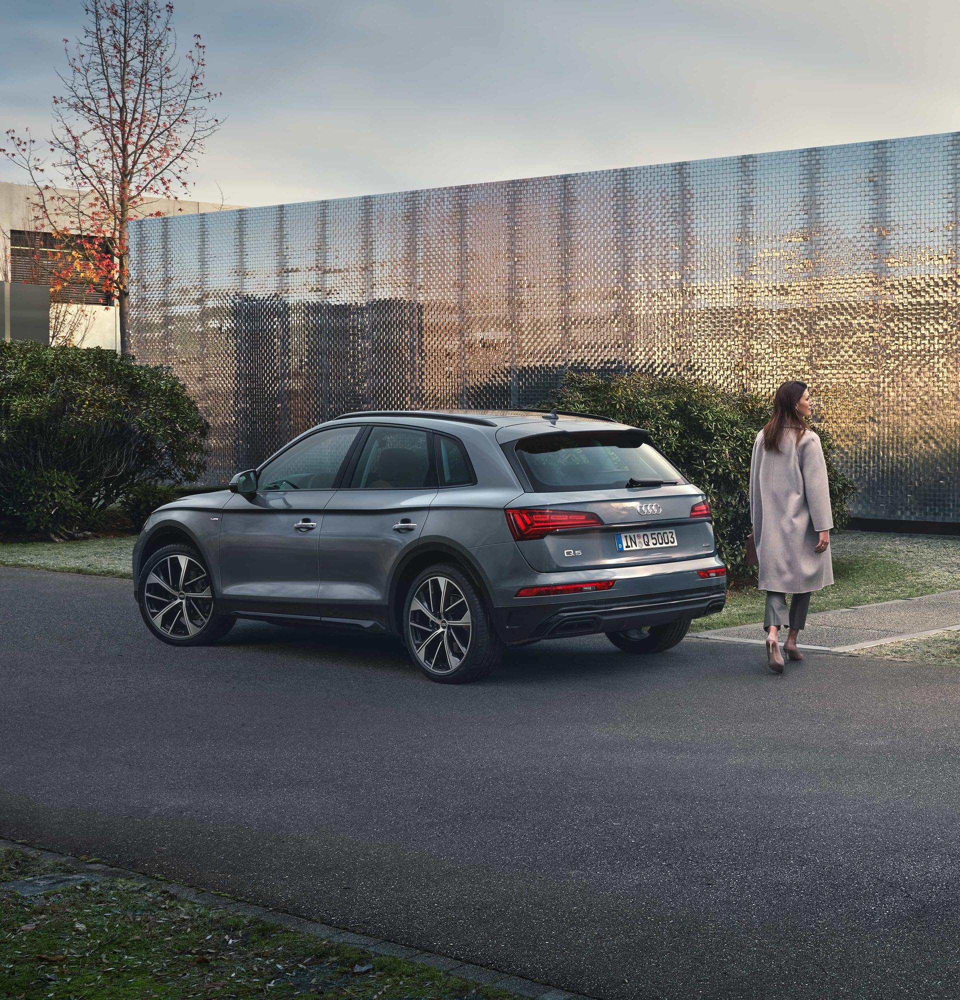
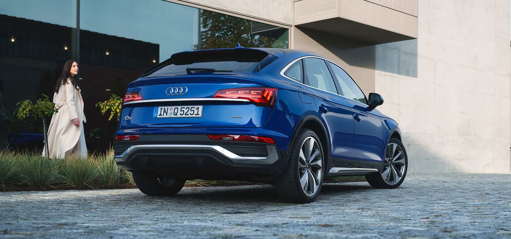

目前所在位置 > Q5
Q5
以動感設計成為目光焦點，以順暢駕馭描繪完美旅程，以寬敞空間進階人生新格局，The new Audi Q5 替一成不變的生活翻閱新篇章！搭配 quattro ultra 智慧型四輪傳動系統及全方位主動安全系統，Audi Q5 與您從容應對所有路況，帶您體驗每趟旅程中動感至上的駕馭樂趣。
奧迪Q5是一款豪華而多功能的跨界SUV，結合了奧迪品牌的精湛工藝和卓越性能。它提供多種引擎選擇，包括高效的四缸引擎和強勁的V6引擎。
Q5的設計注重實用性和奢華感，外觀兼具力量感和動感美學，內飾則提供舒適的座椅和先進的車載科技。
這款車型配備了最新的駕駛輔助系統和安全功能，為駕駛者和乘客提供安全可靠的行車體驗。
‹

›Q5 Sportback
全新 Audi Q5 Sportback 自信如您！車尾斜背流線結合空氣力學動感設計，無與倫比的絕美線條勾勒美感想像，讓品味不言而喻。
Matrix 矩陣式 LED 極光頭燈組喚醒耀眼瞬間，讓駕馭風格更有型！
Audi Q5 Sportback 獨具特色只為獨特的您。
奧迪Q5 Sportback結合了跨界SUV的實用性和轎跑車的運動風格，提供了令人舒適的駕乘體驗和引人注目的外觀設計。
Q5 Sportback的內飾兼具奢華感和先進的科技，讓駕駛者享受到前所未有的駕駛樂趣和乘坐舒適度。
這款車型配備了高效動力系統和最新的車載技術，既適合城市通勤也適合長途旅行。
‹

›